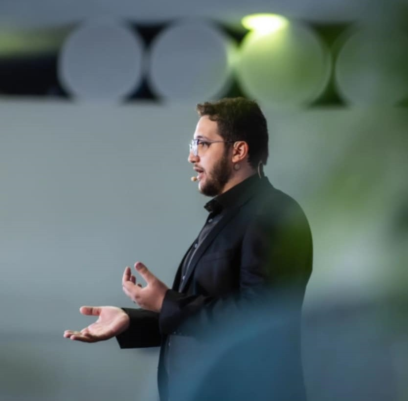
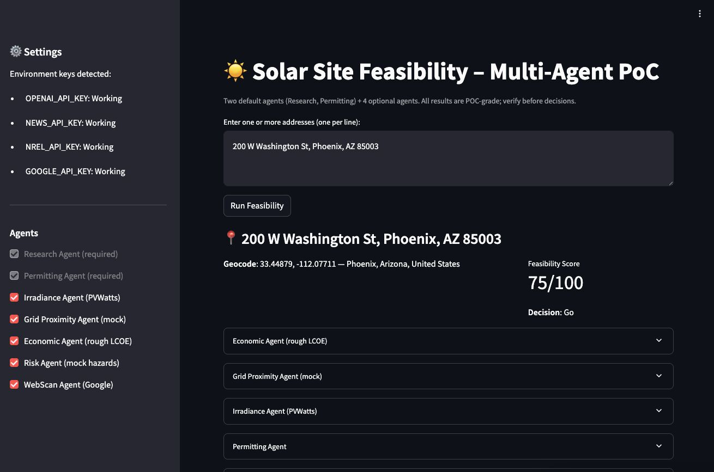

Production GenAI systems
RAG pipelines, retrievers, rerankers, validation flows, and reusable LangChain components.
I am Wassim Nijaoui, currently working remotely as a Senior AI Engineer at XCoding Solutions. My recent experience spans production RAG systems, knowledge-graph and ingestion-based chatbots, Java microservices, anomaly detection, research engineering, and startup product work across XCoding Solutions, Ericsson, CGI, Ciena, Cisco, Concordia, and my own ventures.

My work sits at the intersection of production AI, backend engineering, applied research, and product development, with experience across telecom, academia, and startup environments.
RAG pipelines, retrievers, rerankers, validation flows, and reusable LangChain components.
Spring Boot microservices, REST APIs, Kafka systems, monitoring automation, and ML-enabled operations.
From university research and published work to shipped prototypes and production-facing tools.
Professional, startup, and research work organized in separate tracks for easier navigation.
Degrees, publication work, and academic milestones that support the broader engineering profile.
Concordia University, Montreal
Concordia University, Montreal
Behavior-Driven Data Augmentation for NILM, published with Springer Nature.
Selected awards, competition results, and publication recognition.
Received 3 times: 2021, 2022, and 2024.
3 awards listed in the current resume.
1st place, 3 times: 2022, 2023, and 2024.
Published work highlighted as part of both the academic and recognition profile.
A recent GenAI proof of concept that combines multi-agent orchestration, public-source research, permitting workflows, and scoring logic into a practical Go or No-Go solar feasibility tool.

Built as a Streamlit and LangGraph proof of concept, the system evaluates one or more addresses, runs independent agents for research and permitting, and can optionally layer in irradiance, economics, grid, risk, and web context before producing a final feasibility score and decision.
Core areas that best represent the work shown across the site.
Agentic AI, multi-agent workflows, fine-tuning, semantic search depth, OpenAI APIs, LangChain, and Langflow.
FastAPI, Flask, Django, Spring Boot, REST APIs, Swagger, and event-driven service design.
AWS, Docker, Kubernetes, Jenkins, GitHub Actions, CI/CD automation, and production support workflows.
The main structure is in place. The next update can focus on filling startup details and any additional public company or project context.